Rewired Editor
The Rewired Editor allows you to create players, actions, controller maps, custom controllers, configure settings, and more.
Pages:
- Settings
- Tools
- Players
- Actions
- Input Behaviors
- Map Categories
- Action Categories
- Custom Controllers
- Joystick Layouts
- Keyboard Layouts
- Mouse Layouts
- Custom Controller Layouts
- Joystick Maps
- Keyboard Maps
- Mouse Maps
- Custom Controller Maps
Settings
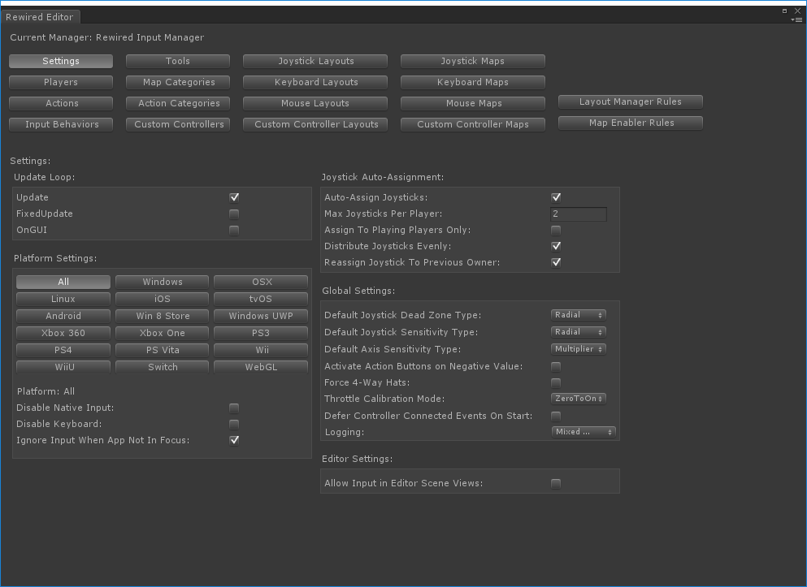
The Settings page allows you change the options for the current Input Manager. The options available are as follows:
Tools
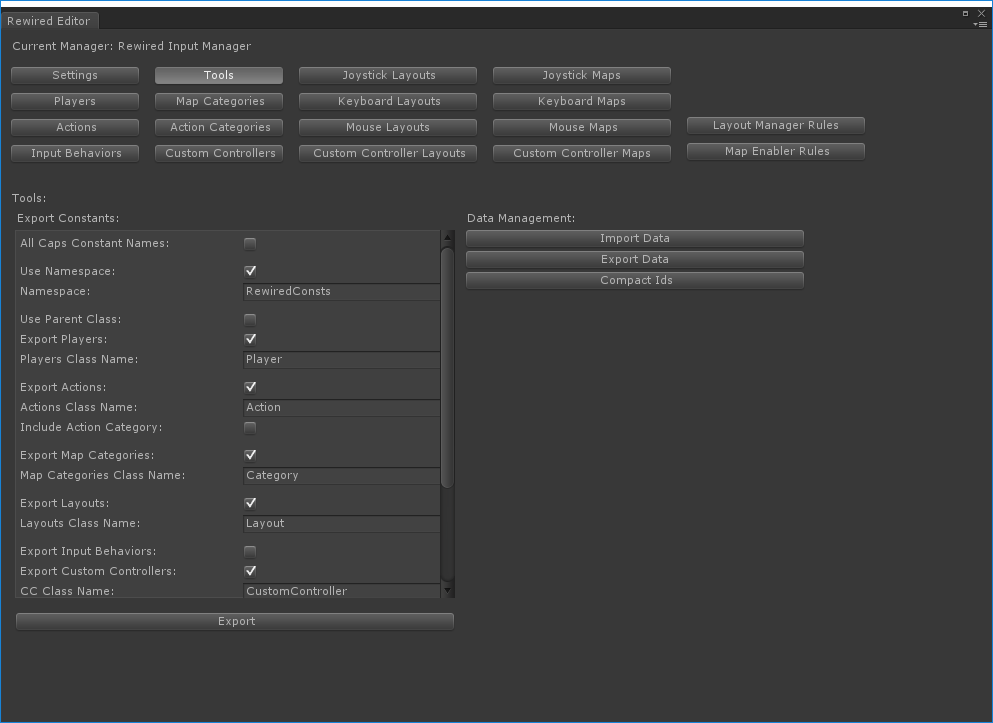
Export Constants:
Allows you to export a list of constants for all Rewired Actions, Map Categories, and Layouts. These constants can be used in place of strings when interacting with the Rewired API. Clicking "Export" will create a CS file which must be saved somewhere in your project.
Note: The exported consts will only be valid for this Rewired Input Manager. Also, if you add or delete items from the Rewired Input Manager, this list must be exported again.
(See How To's - Exporting constants for use in scripting for more information.)
| All Caps Constant Names | Constant names will be written in all capital letters. |
| Use Namespace | Wrap all the exported classes in a namespace. |
| Namespace | The namespace. Only valid C# namespace characters are allowed. |
| Use Parent Class | Wrap all the exported classes in a single parent class for better organization. |
| Parent Class Name | Name of the parent class. Only valid C# class name characters are allowed. This class name must be unique. |
| Export Players | Export Players to a class of constants. |
| Players Class Name | Name of the class that will contain the Player constants. Only valid C# class name characters are allowed. This class name must be unique. |
| Export Actions | Export Actions to a class of constants. |
| Actions Class Name | Name of the class that will contain the Action constants. Only valid C# class name characters are allowed. This class name must be unique. |
| Include Action Category | Includes the Action Category name in the Actions list. |
| Create Action Category Classes | If enabled, a separate class will be created for each Action Category and Action constants will be generated inside these classes. If disabled, includes the Action Category in the name of each constant. The Action Category name will preceed the Action name for the final const name. Example: public const int Default_Jump = 1; Otherwise, the Action name alone will be used. Example: public const int Jump = 1; |
| Export Map Categories | Export Map Categories to a class of constants. |
| Map Categories Class Name | Name of the class that will contain the Map Category constants. Only valid C# class name characters are allowed. This class name must be unique. |
| Export Layouts | Export Layouts to a class of constants. |
| Layouts Class Name | Name of the class that will contain the Layout constants. Only valid C# class name characters are allowed. This class name must be unique. Layout constants will be wrapped in an additional class named for the Layout type. |
| Export Custom Controllers | Export Custom Controllers to a class of constants. |
| CC Class Name | Name of the class that will contain the Custom Controller constants. Only valid C# class name characters are allowed. This class name must be unique. |
| CC Axes Class Name | Name of the class that will contain the Axis constants. Only valid C# class name characters are allowed. This class name must be unique. |
| CC Buttons Class Name | Name of the class that will contain the Button constants. Only valid C# class name characters are allowed. This class name must be unique. |
Data Management:
| Import Data | Import data from a file. Imported data can replace or be merged with existing data. |
| Export Data | Export all data to a file. |
| Compact Ids | This renumbers all id's so they start at 0 and have no gaps. |
Players
The Players page allows you to create and edit Players.
Players are at the center of input in Rewired. Generally, you will always get input from the Player and not from the controllers directly. Because of this, it is necessary to always create at least one Player. (See Players for more detailed information.)
Players must be assigned controller maps before controls can be mapped to actions. First you create maps in Joystick Maps, Keyboard Maps, Mouse Maps, and Custom Controller Maps, then assign them to each Player.
Player Properties:
| Player Id | The id of the Player. This can be used to get the player via scripting. (Read-only) |
| Name | Used to access the player via scripting. Must be unique. |
| Descriptive Name | The descriptive name which can be shown to players. |
| Is Playing on Start | Does this Player start with isPlaying = true? This affects controller auto-assignment if you're using that option. |
| Assign Mouse on Start | Assign the Mouse to this Player on start. |
| Assign Keyboard on Start | Assign the Keyboard to this Player on start. |
| Exclude Joy Auto-Assign | Determines whether Joysticks can be auto-assigned to this Player. |
To create a new Player:
Click the "New" button below the "Players:" box.
To name a Player:
Edit the "Name" and "Descriptive Name" fields in the second column.
To create a Custom Controller:
Click the "Add Custom Controller" button and choose a controller.
Note: Custom Controllers, unlike Joysticks, are instantiated for each player. When you add a Custom Controller, the controller will be created on game start and assigned to the Player. If you add the same controller to multiple Players, the Custom Controller will be instantiated for each, therefore setting a Tag on each can be helpful to differentiate the controllers.
Custom Controller Options:
| Controller | The controller to instantiate for this player. |
| Tag | Sets a tag on this player's controller. Can be used to get the controller via scripting. |
To assign a controller map:
Under "Assign Default Maps", choose the map type you wish to assign by clicking the appropriate button "Joystick Maps", "Keyboard Maps", "Mouse Maps", or "Custom Controller Maps." Then, click "Add Joystick Map" (or whatever map type you chose) and change the settings.
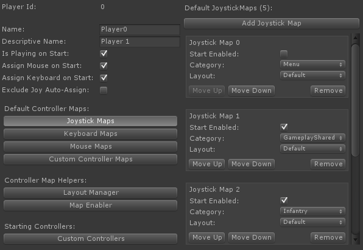
Controller Map Options:
| Start Enabled | Does this controller map start enabled? If set to false, all controls in this map will be ignored. |
| Category | The category of the controller map. |
| Layout | The layout of the controller map. |
Actions
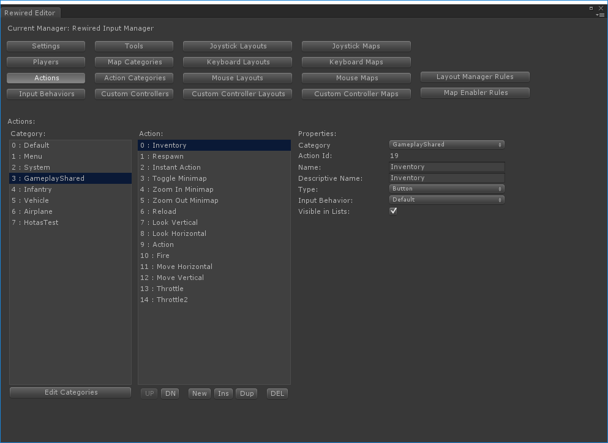
The Actions page allows you to create and edit Actions.
Category Box:
Select a category to see the Actions in this category.
Click "Edit Categories" to add or edit Action Categories.
Action Box:
Select an Action to modify its properties.
Action Properties:
| Action Id | Can be used to get the value of the action via scripting. |
| Name | Used to get the value of the action via scripting. Must be unique. |
| Descriptive Name | The descriptive name that can be shown to players when mapping controls. This name is shown for axes (when not mapped as a split axis) and for buttons. |
| Type | The type of element you expect to map to this action. This is to help with user control mapping so you can map split axes. Even if set to Button, full axis data will still be available from GetAxis. |
| Positive Name | Descriptive name for the positive pole of the axis. This can be shown to players if mapping a split axis. |
| Negative Name | Descriptive name for the negative pole of the axis. This can be shown to players if mapping a split axis. |
| Input Behavior | The behavior that determines the final processed axis and button values of this action. |
| Visible in Lists | Determines whether this action appears in certain lists such as in a control remapping UI.. |
Input Behaviors
The Input Behaviors page allows you to create and edit Input Behaviors.
Input Behaviors allow you to set options for digital axis simulation (sensitivity, gravity, etc.), how to handle mouse axes, a GetButtonDown buffer, button double press speed, button dead zone, and more. You can assign an Input Behavior to an Action on the Actions page.
Input Behavior Properties:
| Name | The name of this Input Behavior. |
| Joystick Axis Sensitivity | All joystick axes are multiplied by this value. |
| Digital Axis Simulation | Enables digital axis simulation which makes button or key presses contribute to an Action's axis value gradually over time based on gravity and sensitivity. This only affects axis values generated by button and key presses. |
| Digital Axis Snap | When input is received in the opposite direction of the current flow, snap axis value to 0 and continue from there. This only affects axis values generated by button and key presses. |
| Digital Axis Instant Reverse | When input is received in the opposite direction of the current flow, reverse the current value to the opposite sign and continue from there. This only affects axis values generated by button and key presses. |
| Digital Axis Gravity | Speed (units/sec) that the axis value falls toward 0. This only affects axis values generated by button and key presses. |
| Digital Axis Sensitivity | Speed to move toward an axis value of 1.0 in units/sec. This only affects axis values generated by button and key presses. |
| Mouse XY Axis Mode | Affects how mouse X/Y axes contribute to the value. Mouse Axis - Value range that depends on speed of movement. The value can and does exceed +/- 1.0 by a large amount. This value is the same value returned by Unity's Input.GetAxis when axis type is set to Mouse Movement. Mouse Sensitivity is multiplied by the axis value. Digital Axis - Any mouse movement returns a value from -1.0 to 1.0 and is smoothed by the digital axis filters. This makes mouse movement behave like a button or key press. ScreenPositionDelta - A value from -1.0 to 1.0 that represents the distance moved across the screen over the update cycle. The value is normalized based on the width and height of the screen. A movement across the entire screen distance in one update cycle will return +/- 1.0. Speed - A value based on the speed the mouse is moved across the screen. Speed is calculated from the mouse movement delta / delta time. The returned value can exceed +/- 1.0. |
| Mouse XY Axis Sensitivity | (If Mouse XY Axis Mode = MouseAxis) |
| Mouse XY Delta Calc | (If Mouse XY Axis Mode = ScreenPositionDelta or Speed) If you need the delta consistent between X and Y movement, change this to ScreenWidth or ScreenHeight and the delta will be calculated based on only one dimension. Note that the returned value may exceed +/- 1.0 if set to a value other than Normal. |
| Mouse Other Axis Mode | Affects how mouse axes other than X/Y contribute to the value. This affects the mouse wheel axis. Mouse Axis - Value range goes beyond -1 to 1 depending on speed of movement. This value is the same value returned by Unity's Input.GetAxis when axis type is set to Mouse Movement. Mouse Other Axis Sensitivity is multiplied by the axis value. Digital Axis - Any movement returns -1 to 1 and is smoothed by digital axes values. Mouse movement behaves like a button or keyboard key press. Mouse sensitivity does not affect this mode. Instead, all Digital Axis filters are applied. |
| Mouse Other Axis Sensitivity | (If Mouse Other Axis Mode = MouseAxis) All mouse axes except X/Y are multiplied by this value. |
| Custom Controller Axis Sensitivity | All Custom Controller axes are multiplied by this value. |
| Button Double Press Speed | Time in seconds in which to register a button double-press or double-click. |
| Button Short Press Time | Time in seconds that a button or axis must be held to register a short press. |
| Button Short Press Expires In | Time in seconds after a short press is registered after which it will expire and no longer return true for any button events. For example: If you want the press to expire 2 seconds after the press first registers true, set this value to 2. This is useful, for example, if you want short and long presses to be mutually exclusive. [0 = Never expires] |
| Button Long Press Time | Time in seconds that a button or axis must be held to register a long press. |
| Button Long Press Expires In | Time in seconds after a long press is registered after which it will expire and no longer return true for any button events. For example: If you want the press to expire 2 seconds after the press first registers true, set this value to 2. [0 = Never expires] |
| Button Repeat Rate | The number of times per second the button state will be True when queried with GetButtonRepeating or the equivalent event. |
| Button Repeat Delay | The duration in seconds before repeating will begin after the initial press when queried with GetButtonRepeating or the equivalent event. [0 = No delay] |
| Button Dead Zone | When an action's axis value is below this threshold, GetButton will return false. This is useful if you map axes as buttons. If the value is too low, GetButton may always return true. If the value is 1, it will never return true. |
| Button Down Buffer | Time in seconds to buffer GetButtonDown results. This makes GetButtonDown return TRUE for extra time beyond a single frame. This is useful to prevent missing button presses when pressing very rapidly and the game ignores these presses due to some blocking action. Ex: Punching in rapid succession, but presses are ignored during the punch animation. The buffer value should generally be very small such as 0.08 s, but this will depend on your specific needs. |
Map Categories
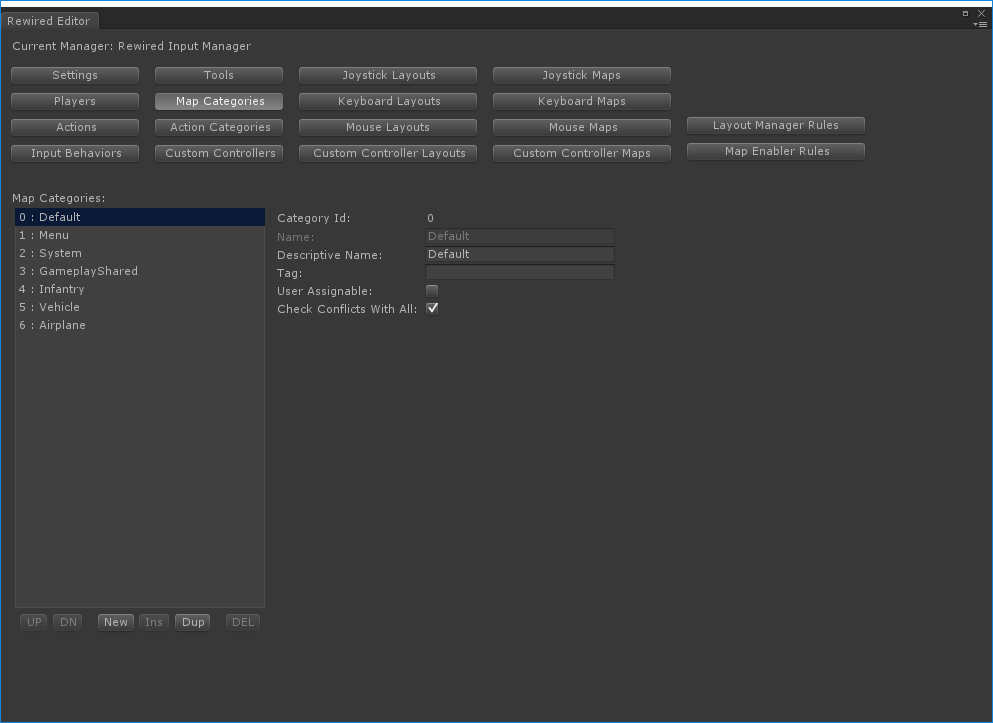
The Map Categories page allows you to create and edit Map Categories.
See Map Categories for more information.
Map Category Properties:
| Category Id | Can be used to get the category via scripting. |
| Name | The name of the category. Used for finding content by category in scripting. Must be unique. |
| Descriptive Name | The descriptive name that can be shown to players. |
| Tag | Allows you to tag a group of categories and search for categories by tag in scripting. |
| User Assignable | Determines whether this category appears in certain lists. Also determines whether element assignments can be automatically removed by conflict checking. If not user assignable, conflict checking cannot automatically remove the assignments. This can be used to protect certain elements and prevent the user from mapping actions to those elements which are used for system actions. For example, ESC. |
| Check Conflicts With All | Determines what map categories to check against for assignment conflicts when the user is mapping a control to a map in this category. True = check maps in all categories. |
| Check Conflicts With Specific Categories | Add specific categories you want to allow conflict checking against. Note that this is not a two-way setting. It only affects conflict checking from controls in this category to the other category. If you want to enable/disable checking for the reverse direction, you must set it in the other category. |
Action Categories
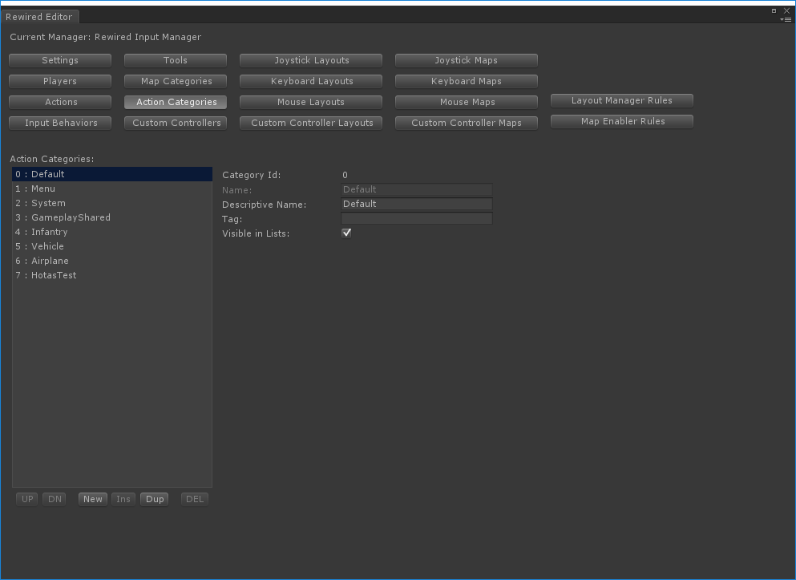
The Action Categories page allows you to create and edit Action Categories.
Action Categories can be used to organize your Actions. Action Categories can also be used in a user control mapping UI to display categorized lists of Actions to the user.
Action Category Properties:
| Category Id | Can be used to get the category via scripting. (Read-only) |
| Name | The name of the category. Used for finding content by category in scripting. Must be unique. |
| Descriptive Name | The descriptive name that can be shown to players. |
| Tag | Allows you to tag a group of categories and search for categories by tag in scripting. |
| Visible in Lists | Determines whether this category appears in certain lists such as in a control remapping UI. |
Custom Controllers
The Custom Controllers page allows you to create and edit Custom Controllers.
Custom Controllers are virtual controllers that you can customize, adding as many axes and buttons as you need. Any value can be used to drive the controller's element values. For example, Custom Controllers can be used for on-screeen touch controllers. (See the example in the Rewired/Examples folder.)
Creating a Custom Controller:
Click the "New" button below the "Custom Controllers" box to create a new controller.
Give the controller a Name and Descriptive name under "Controller Properties."
Add axes and buttons to the controller and define properties for each.
Custom Controller Properties:
| Id | The source id of the Custom Controller. Note: This does not correspond to the unique id that will be assigned to the controller when it is instantiated, so it can't be used to get the instantiated controller. However, this can be used to instantiate a Custom Controller of this type manually via scripting. |
| Name | The name of the controller. Used in scripting. Must be unique. |
| Descriptive Name | The descriptive name that can be shown to players. |
Axis Properties:
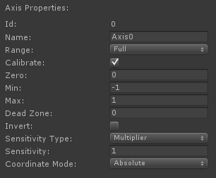
| Id | The element identifier id of the element. Can be used in scripting. |
| Name | The name of the element. This can be used in scripting and shown to players. Must be unique. |
| Range | What portion of the axis's range contributes to the value? Full = Both positive and negative sides of the axis. |
| Calibrate | Scale and clamp values to a min/max range and apply other calibration transformations. Disable this if you want values to pass through unmodified. |
| Zero | The zero point of the axis. |
| Min | The lowest possible value of the axis. [-1 to 1] |
| Max | The highest possible value of the axis. [-1 to 1] |
| Dead Zone | When the axis value falls within the zero point +/- this threshold, the returned value will be zero. |
| Invert | Inverts the final value of the axis. |
| Coordinate Mode | The coordinate mode of the axis data. This should be set to Relative for axes that return delta values. |
Button Properties:
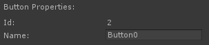
| Id | The element identifier id of the element. Can be used in scripting. |
| Name | The name of the element. This can be used in scripting and shown to players. Must be unique. |
Joystick Layouts
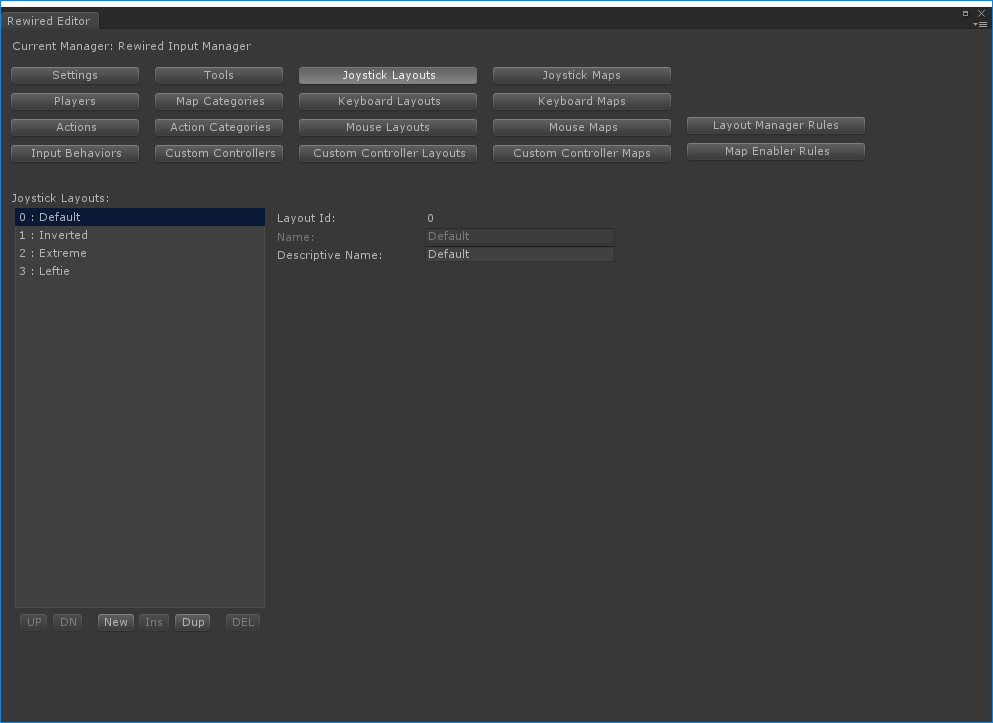
The Joystick Layouts page allows you to create and edit Joystick Layouts.
See Layouts for more information.
Layout Properties:
| Layout Id | Can be used to get the layout via scripting. |
| Name | The name of the layout. Used in scripting. Must be unique. |
| Description | The descriptive name that can be shown to players. |
Keyboard Layouts
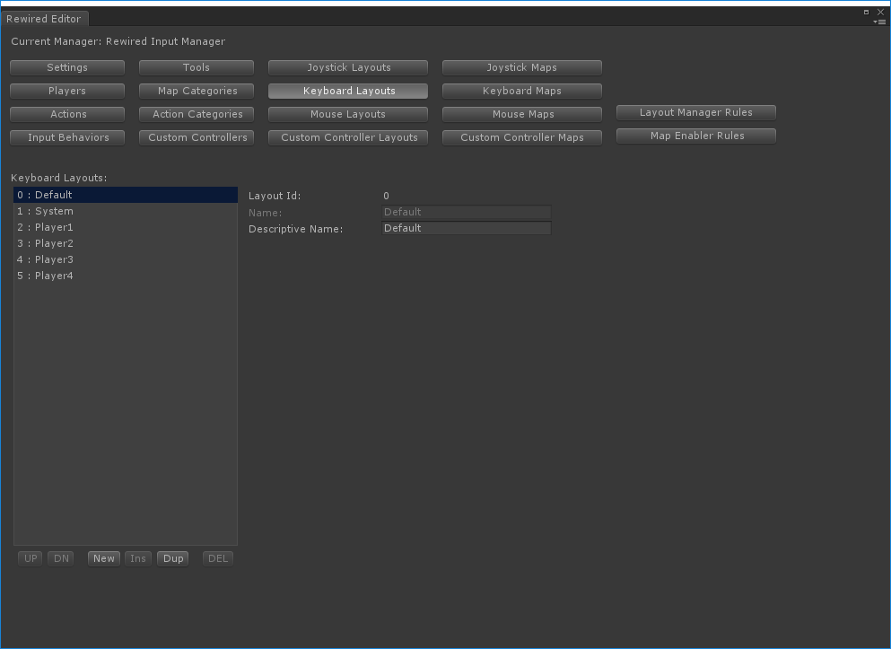
The Keyboard Layouts page allows you to create and edit Keyboard Layouts.
See Layouts for more information.
Layout Properties:
| Layout Id | Can be used to get the layout via scripting. |
| Name | The name of the layout. Used in scripting. Must be unique. |
| Description | The descriptive name that can be shown to players. |
Mouse Layouts
The Mouse Layouts page allows you to create and edit Mouse Layouts.
See Layouts for more information.
Layout Properties:
| Layout Id | Can be used to get the layout via scripting. |
| Name | The name of the layout. Used in scripting. Must be unique. |
| Description | The descriptive name that can be shown to players. |
Custom Controller Layouts
The Custom Controller Layouts page allows you to create and edit Custom Controller.
See Layouts for more information.
Layout Properties:
| Layout Id | Can be used to get the layout via scripting. |
| Name | The name of the layout. Used in scripting. Must be unique. |
| Description | The descriptive name that can be shown to players. |
Joystick Maps
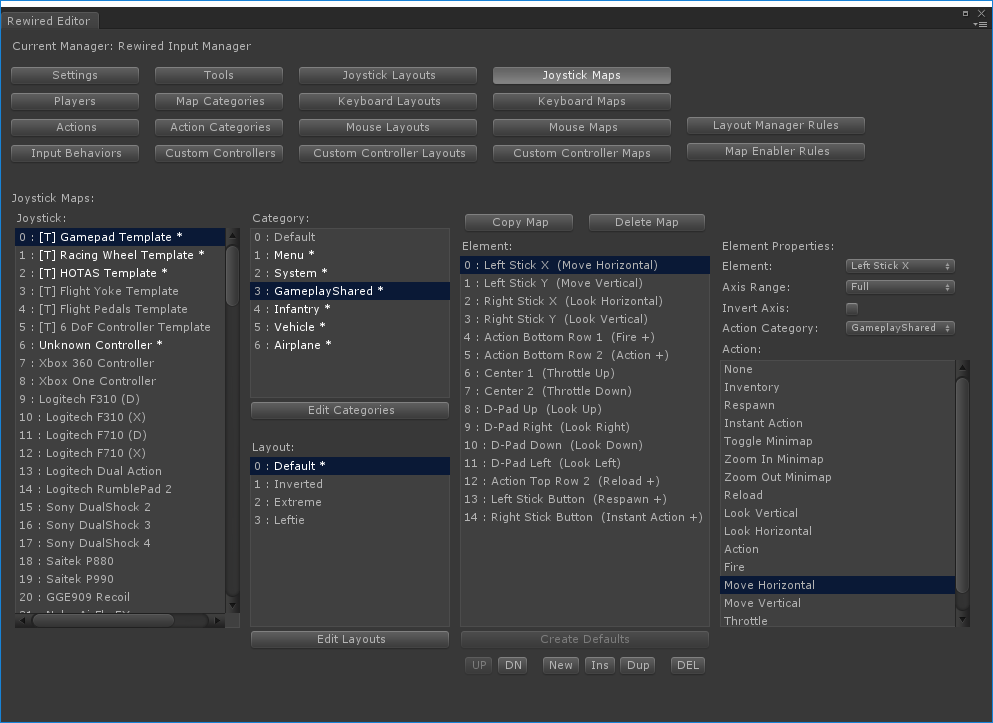
The Joystick Maps page allows you to create and edit Joystick Maps.
See Controller Maps for more information.
Selecting a Map:
To select a map, you must select the following: 1) A Joystick or Joystick Template, 2) a Category, and 3) a Layout.
Creating a new Map:
Select a joystick/template, a category, and a layout, then click the "Create Map" button. A blank map will be created. You can then add elements to the new map by clicking the "New" button beneath the "Elements" box or by clicking the "Create Defaults" button in the same location. "Create Defaults" will create a series of unassigned elements based on the current joystick. You can then assign actions to these elements. Note: "Create Defaults" is only enabled if the map is empty of elements.
When a Joystick, Template, Category, or Layout has had a map created for it, the name will be displayed in a different color and have an * after it.
Deleting a Map:
Select a joystick/template, a category, and a layout, then click the "Delete Map" button.
Element Properties (Axis):
| Element | The controller element. |
| Axis Range | What portion of the axis's range triggers the assigned action? Full = Both positive and negative sides of the axis trigger the action. |
| Invert Axis | Invert the axis? (Only shown if Axis Range is Full) |
| Axis Contribution | When this element is activated, does it add positive or negative value to the action's final axis value? (Only shown if Axis Range is Positive or Negative) |
| Action Category | The category containing the action to be assigned to this element. |
| Action | The action assigned to this element. |
Element Properties (Button):
| Element | The controller element. |
| Axis Contribution | When this element is activated, does it add positive or negative value to the action's final axis value? |
| Action Category | The category containing the action to be assigned to this element. |
| Action | The action assigned to this element. |
Keyboard Maps
The Keyboard Maps page allows you to create and edit Keyboard Maps.
See Controller Maps for more information.
Selecting a Map:
To select a map, you must select the following: 1) a Category, and 2) a Layout.
Creating a new Map:
Select a category and a layout, then click the "Create Map" button. A blank map will be created. You can then add elements to the new map by clicking the "New" button beneath the "Elements" box. You can then assign an action to the element.
When a Category or Layout has had a map created for it, the name will be displayed with an (*) after it.
Deleting a Map:
Select a category and a layout, then click the "Delete Map" button.
Element Properties:
| Key | The keyboard key assigned to this element. |
| Poll for Key Press | Allows you to assign a key by pressing a key on the keyboard. Note: Certain keys may not be assignable via this method such as Left Shift and Right Shift. Those keys can only be assigned manually using the list box. |
| Modifier Key 1 | A modifier key that must be held for this action to return true. The order of multiple modifier key presses makes no difference. NOTE: Many modifier key combos do not work correctly in the Unity editor because the key combos are already mapped to Unity functions. |
| Modifier Key 2 | A modifier key that must be held for this action to return true. The order of multiple modifier key presses makes no difference. |
| Modifier Key 3 | A modifier key that must be held for this action to return true. The order of multiple modifier key presses makes no difference. |
| Axis Contribution | When this key is pressed, does it add positive or negative value to the action's final axis value? |
| Action Category | The category containing the action to be assigned to this element. |
| Action | The action assigned to this element. |
Mouse Maps
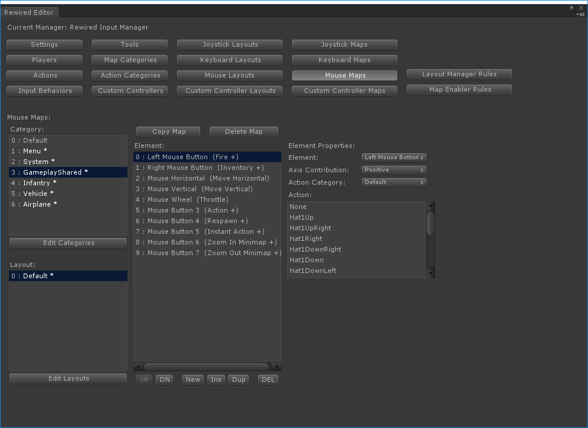
The Mouse Maps page allows you to create and edit Mouse Maps.
See Controller Maps for more information.
Selecting a Map:
To select a map, you must select the following: 1) a Category, and 2) a Layout.
Creating a new Map:
Select a category and a layout, then click the "Create Map" button. A blank map will be created. You can then add elements to the new map by clicking the "New" button beneath the "Elements" box. You can then assign an action to the element.
When a Category or Layout has had a map created for it, the name will be displayed with an (*) after it.
Deleting a Map:
Select a category and a layout, then click the "Delete Map" button.
Element Properties (Axis):
| Element | The controller element. |
| Axis Range | What portion of the axis's range triggers the assigned action? Full = Both positive and negative sides of the axis trigger the action. |
| Invert Axis | Invert the axis? (Only shown if Axis Range is Full) |
| Axis Contribution | When this element is activated, does it add positive or negative value to the action's final axis value? (Only shown if Axis Range is Positive or Negative) |
| Action Category | The category containing the action to be assigned to this element. |
| Action | The action assigned to this element. |
Element Properties (Button):
| Element | The controller element. |
| Axis Contribution | When this element is activated, does it add positive or negative value to the action's final axis value? |
| Action Category | The category containing the action to be assigned to this element. |
| Action | The action assigned to this element. |
Custom Controller Maps
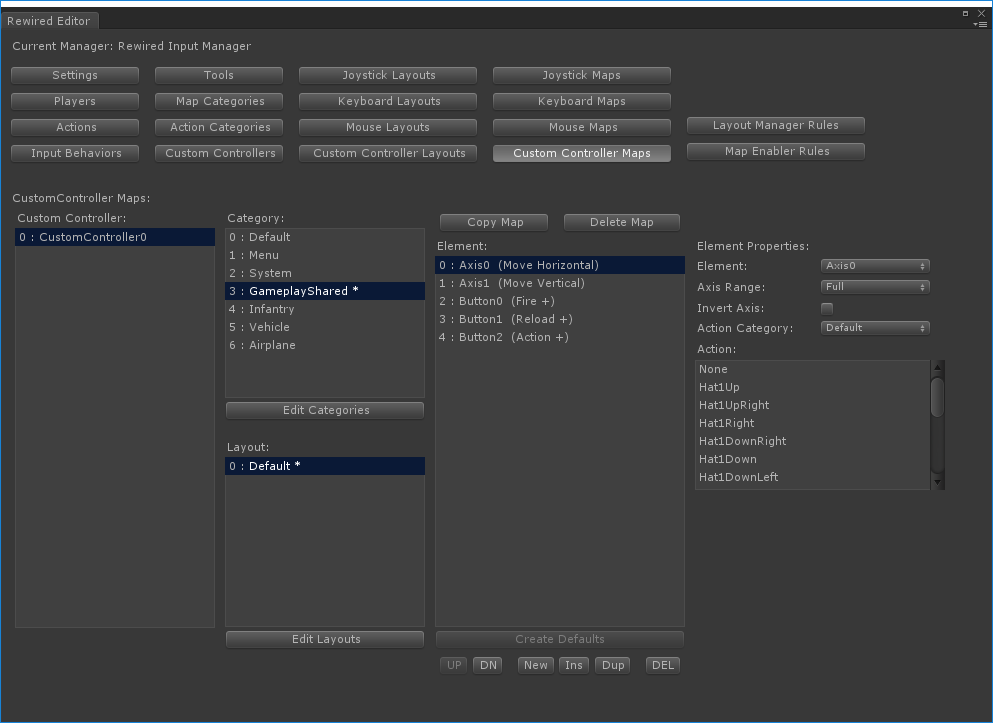
The Custom Controller Maps page allows you to create and edit Custom Controller Maps.
See Controller Maps for more information.
Selecting a Map:
To select a map, you must select the following: 1) A Custom Controller, 2) a Category, and 3) a Layout.
Creating a new Map:
Select a Custom Controller, a category, and a layout, then click the "Create Map" button. A blank map will be created. You can then add elements to the new map by clicking the "New" button beneath the "Elements" box or by clicking the "Create Defaults" button in the same location. "Create Defaults" will create a series of unassigned elements based on the current Custom Controller. You can then assign actions to these elements. Note: "Create Defaults" is only enabled if the map is empty of elements.
When a Custom Controller, Category, or Layout has had a map created for it, the name will be displayed with an (*) after it.
Deleting a Map:
Select a Custom Controller, a category, and a layout, then click the "Delete Map" button.
Element Properties (Axis):
| Element | The controller element. |
| Axis Range | What portion of the axis's range triggers the assigned action? Full = Both positive and negative sides of the axis trigger the action. |
| Invert Axis | Invert the axis? (Only shown if Axis Range is Full) |
| Axis Contribution | When this element is activated, does it add positive or negative value to the action's final axis value? (Only shown if Axis Range is Positive or Negative) |
| Action Category | The category containing the action to be assigned to this element. |
| Action | The action assigned to this element. |
Element Properties (Button):
| Element | The controller element. |
| Axis Contribution | When this element is activated, does it add positive or negative value to the action's final axis value? |
| Action Category | The category containing the action to be assigned to this element. |
| Action | The action assigned to this element. |